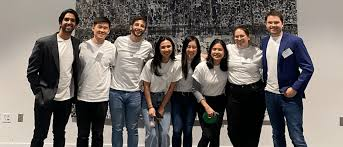
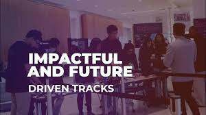
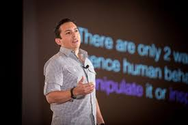

Our History
TechCon began in 2010 as a small grassroots event hosted by a group of technology enthusiasts in San Francisco. Originally conceived as a one-day meetup to share ideas about web development, the event quickly gained traction within the tech community. The enthusiasm and demand for deeper discussions around innovation, design, and scalability led organizers to expand the format into a full-blown multi-day conference.
By 2013, TechCon had moved into larger venues, attracting hundreds of developers, engineers, and tech leaders from across the country. The event started to feature keynote speakers, sponsor showcases, and themed breakout sessions that focused on emerging technologies like cloud computing, mobile development, and cybersecurity.
Over the next decade, TechCon evolved into an internationally recognized event. It now hosts over 5,000 attendees annually and includes workshops, live demos, hackathons, and networking opportunities. It has become a launchpad for startups, a hub for research-driven presentations, and a place where aspiring and seasoned professionals come together to shape the future of technology.

Our Mission
Our mission is to foster innovation, collaboration, and education in the tech community. TechCon provides a platform for sharing knowledge, showcasing breakthroughs, and inspiring the next generation of tech leaders.

Notable Past Speakers
Peter Diamandis
Peter H. Diamandis is an engineer, physician, and entrepreneur best known for founding the XPRIZE Foundation and co-founding Singularity University. At TechCon, he captivated audiences with his talk on exponential technologies and how they are shaping a future of abundance. His work inspires tech leaders to think bigger and leverage innovation for global impact.
Brian Solis
Brian Solis is a digital anthropologist and futurist who has authored several bestselling books on innovation and digital transformation. At TechCon, he spoke about human-centered design, customer experience in the digital age, and the evolving relationship between technology and behavior. His insights help companies embrace disruption and create meaningful tech-driven change.

Mark Cuban
Mark Cuban is a tech entrepreneur, investor, and owner of the Dallas Mavericks. Known for his role on Shark Tank, he is also a major advocate of AI, blockchain, and decentralized finance. At TechCon, Mark shared his journey from founding Broadcast.com to investing in groundbreaking startups, encouraging developers to think boldly and build fearlessly.